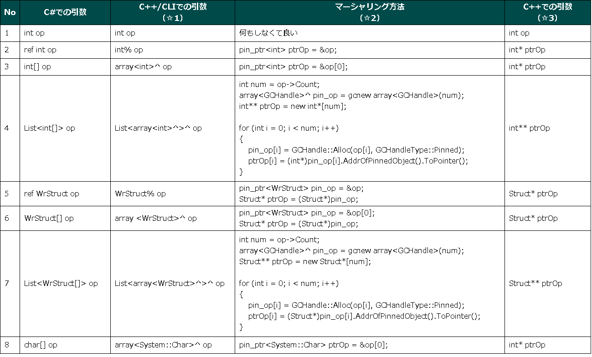

概要
において、C#から、C++の標準関数、自作関数、自作クラスを利用する例を説明しました。
以下の模式図を見てください。C++のクラス「NativeClass」の「NativeFunction」メソッドをC#で利用する例の模式図です。
ポイントになるのは、
「様々な引数を、どのようにC#とC++間で橋渡し（マーシャリング）をするのか？」
です。
いろいろな例
以下のような引数の橋渡し方法を考えてみます。
- 基本型
- 基本型のポインタ参照
- 基本型1次元配列
- 基本型の配列の配列
- 構造体型のポインタ参照
- 構造体型1次元配列
- 構造体型の配列の配列
- 文字列（こちらも読んでみてください）
なるべくポインタを駆使することを心がけて、橋渡し方法を考えました。当然、これ以外にもいろいろ方法があると思います。

注意点
- 上の表では省略していますが、pin_ptr、GCHandleはロック解除を忘れないでください
pin_ptrの場合、
pin_op = nullptr;
GCHandleの場合、
pin_op.Free();- 配列の配列からポインタを取り出すイメージ。

- 構造体は、「C++」と「C#／C++/CLI」のパッキングのサイズを一致させることを忘れないようにしてください。
例：
C++の構造体：
#pragma pack(4)
typedef struct tagStruct
{
int a;
int b;
}Struct;
#pragma pack()
C++/CLIの構造体：
[StructLayoutAttribute(LayoutKind::Sequential, Pack = 4)]
public value struct WrStruct
{
int a;
int b;
};
C#の構造体：
[StructLayout(LayoutKind.Sequential, Pack = 4)]
unsafe public struct WrStruct
{
public int a;
public int b;
};- 配列を要素に持つ構造体を扱う場合は、マーシャリングはさらに難しくなります。
- 配列を要素に持つ構造体を扱う場合、
[C++/CLI]配列を含む構造体のpin_ptrによるメモリ受け渡し
を参照してください。
C++/CLIでは実現できません。C#のクラスライブラリを作成し、C++/CLIで読み込みます。
- 配列を要素に持つ構造体を扱う場合、